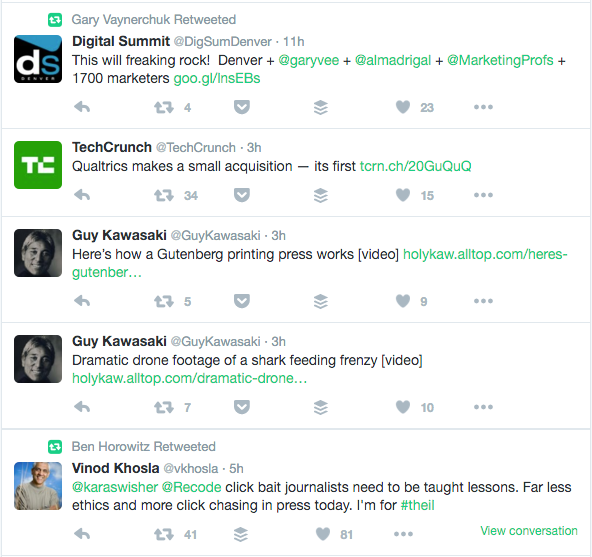
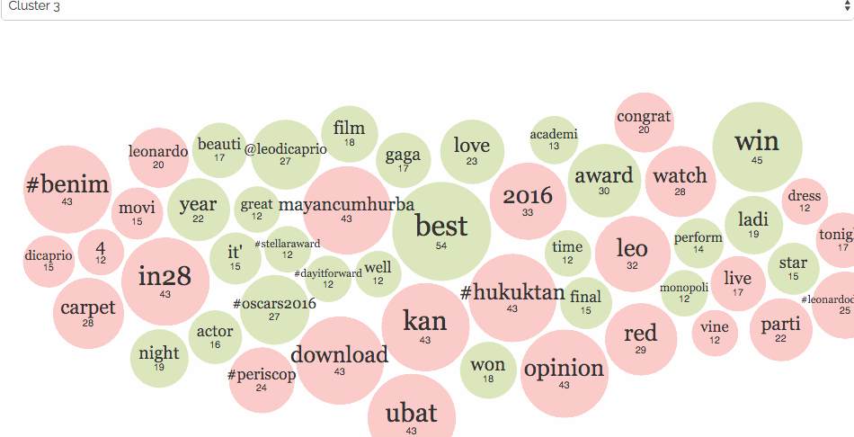
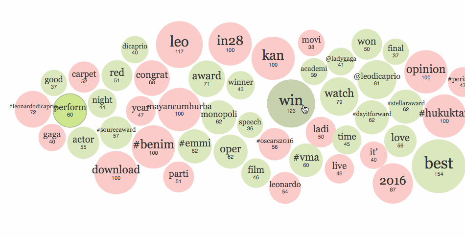
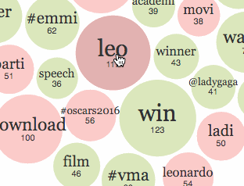
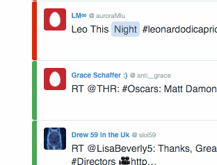

Análisis de sentimientos en Twitter
El bueno, el malo y el >:(
Martín Becerra
Licenciado en Ciencias de la ComputaciónFaMAF (UNC) - Córdoba, ArgentinaPor día se publican más de
500 millones de tweets
-
¿Alguna vez intentaste
ver la opinión sobre tu
marca en Twitter?

No pareciera ser una buena idea
-
Demasiada información
-
Demasiados temas
-
Demasiado tiempo
-
Demasiado caro
Proponemos la
siguiente solución
-
Sea fácil de navegar
-
Sea más que solo texto/imgs
-
Muestre las opiniones
más importantes -
Nos ayude a tomar
decisiones informadas
Y se vería así...

Posibles
aplicaciones
-
Monitoreo de redes sociales
-
Investigación de mercado
-
Descubrimiento de puntos críticos
-
Métricas de impacto social
No es fácil
Pero
nos aproximamos así...
Etapas de la solución
-
Recolección de datos,
-
Pre-procesamiento,
-
Análisis de sentimiento,
-
Clustering y
-
Visualización
Pre-procesamiento
Primero recolectamos los tweets
Análisis de sentimientos
Clasificación automática
de sentimientos
Clustering
Visualización
Visualización de The New York Times (NYT)
Navegación de los diferentes clusters
Nube de palabras interactiva
Etiquetas de sentimiento
